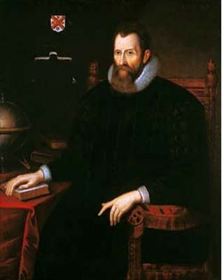
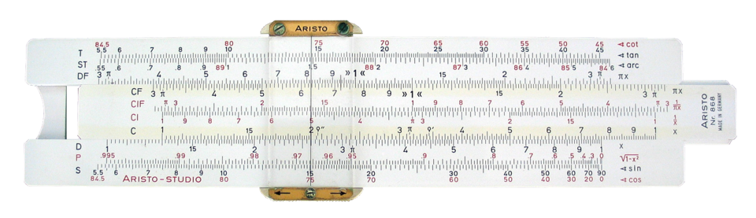

2³ = 8 says the same thing as log₂(8) = 3
log(1,000) = 3 ← just count the zeros!
100 × 1,000 = 100,000 turns into 2 + 3 = 5
Those three lines are logarithms in action. The first line shows the big secret: a logarithm is just a different way to talk about powers you already know. The second line shows the friendliest log of all — in base 10, the answer is simply the number of zeros. The third line shows the superpower that made logarithms famous: they turn multiplication into addition.
Right now that little "log" word might look strange. That's okay! By the end of this lesson, you'll read it as a question — "what power?" — and questions are things you already know how to answer.
Why do people care? Because for over 350 years, logarithms were the world's calculator: astronomers multiplied giant numbers with them, and engineers carried them (as slide rules) all the way to the Moon. Today they measure earthquakes, sound, and how fast things grow. And the best part? Everything in this lesson is built from powers like 2³ = 8 — things you already know.
In this lesson, you will:
- 1.Learn what a logarithm really is: a backwards question about powers
- 2.Translate fluently between log language and power language
- 3.Master base 10, the log that counts zeros — and estimate the in-between ones
- 4.Use the superpower: logs turn multiplication into addition (and division into subtraction)
- 5.Learn the landmarks: the log of 1, the log of the base, and the questions you can't ask
- 6.Meet logs in the wild: doubling populations and the earthquake scale
- 7.Learn the common mistakes so you never make them
- 8.Practice with 100 problems at the end!
How to use this lesson: Read the sections in order. Each section starts with the key idea you'll learn in it. Take your time, and try every "Your Turn" box with a pencil and paper. Ready? Let's go!
📸 Pictures

John Napier (1550–1617) of Scotland invented logarithms and published them in 1614 to make huge multiplications much easier. See source ↓

A slide rule. Before calculators, scientists and engineers multiplied numbers by sliding logarithm scales against each other! See source ↓
🗺️ Your lesson map
The Backwards Question — What a Logarithm Really Is 🧩Lesson 2
The Two Languages — Translating Logs and Powers 🎯Lesson 3
Base 10 — The Log That Counts Zeros 🔍Lesson 4
The Superpower — Multiplication Becomes Addition ⚡Lesson 5
The Landmarks — 0, 1, and the Questions You Can't Ask 🌟Lesson 6
Logs in the Wild — Doubling and the Earthquake Scale ⚠️Lesson 7
Watch Out! Common Mistakes 🧠Lesson 8
Review — The Big Picture 🏋️Practice Problems
100 problems to try 🏆Quiz
Test yourself: new questions every time!
📚 Picture Sources
- Picture 1 · John Napier. By Unknown artist. Public domain. From Wikimedia Commons: https://commons.wikimedia.org/wiki/File:John_Napier.jpg
- Picture 2 · Sliderule 2005. By Roger McLassus (derivative work by Beao). CC BY-SA 3.0. From Wikimedia Commons: https://commons.wikimedia.org/wiki/File:Sliderule_2005.png